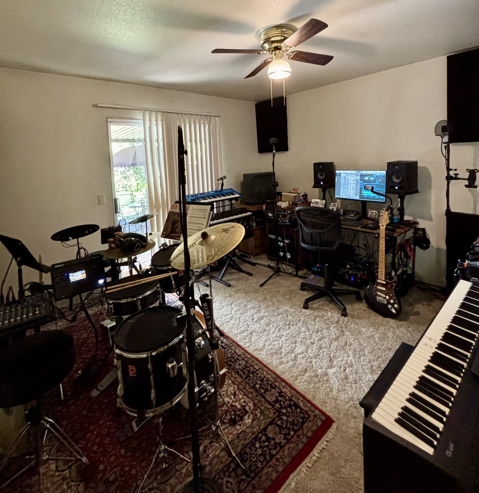
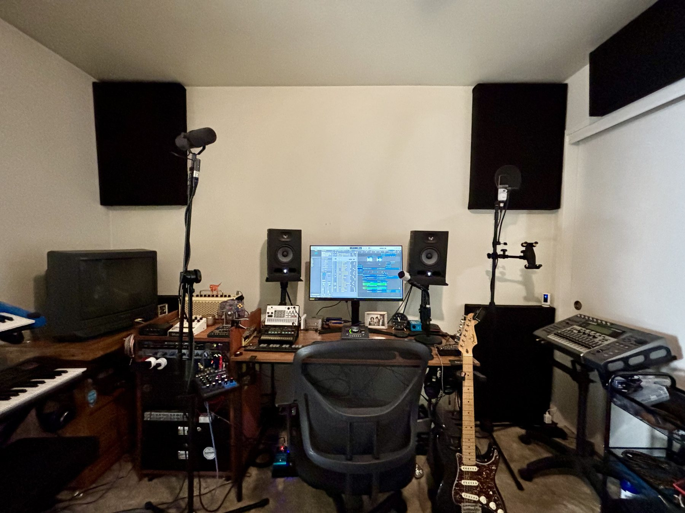

Drums
Technique, groove, fills, reading, coordination, timing, drum-set vocabulary, and song learning.
Sacramento, California · Private music studio
I’m Daniel Blackburn. I teach drums, piano, guitar, and music production at my studio in Arden-Arcade. I also record artists and play drums and keys for sessions and live shows.
Drums · Piano · Guitar · Music production

Bring a song you want to learn or start with the basics. We’ll use the music you play to work on timing, technique, reading, and listening.
Technique, groove, fills, reading, coordination, timing, drum-set vocabulary, and song learning.
Reading, chords, rhythm, ear training, accompaniment, theory, and practical musicianship.
Chords, rhythm, riffs, songs, fretboard knowledge, theory, and technique.
Recording, GarageBand and Logic workflows, signal flow, editing, arranging, and mixing fundamentals.
Lessons are open to children, teens, and adults, including beginners.
See lesson scheduleBook a studio session to track vocals or instruments, record a demo, or add overdubs to a project you’ve already started.
I also record spoken word, run live sound for concerts and church services, and play drums and keys for sessions and gigs. Studio sessions are by appointment.
Recording Inquiry
Artist & Instrument Recording
Vocals, drums, guitar, keys, overdubs, demos, and session work.
Production
Arrangement, tracking, editing, and practical help moving a song from idea to finished recording.
Audio Projects
Spoken word, voice, podcast-style recording, and other small-format audio projects.
Live Audio Engineering
FOH and live sound support for concerts, performances, church services, and events.
Session & Live Musician
Drums and keys for recording sessions, artist projects, live performances, fill-in work, and other project-based bookings.
About Daniel
Daniel Blackburn is a professional drummer, multi-instrumentalist, music educator, session musician, and audio engineer with more than a decade of teaching experience and over 20 years of experience playing drums and piano.
His background includes private instruction, school music programs, live performance, touring, studio recording, worship music, and production. That experience informs a practical teaching approach that connects technique and fundamentals to actual music.
Daniel teaches children, teens, and adults, from complete beginners through experienced students looking to strengthen specific skills.
Selected Work
Listen to selected releases featuring Daniel's work as a drummer, producer, and audio engineer.
Drum Discography
Selected released recordings featuring Daniel on drums.
Open drum playlist on SpotifyProduction & Audio Engineering
Selected releases featuring Daniel's production and audio engineering work.
Open production playlist on SpotifyThe Studio
Blackburn Music Studio is a private, appointment-only teaching and recording studio in the Arden-Arcade area of Sacramento. The room is set up for instrumental instruction, acoustic and electronic drums, keyboard work, multitrack recording, and music production.
For privacy and security, the exact address is provided directly to scheduled students and families.
Acoustic + electronic drums
Flexible setups for teaching and practice.
Recording-ready workflow
Multitrack recording, editing, production, and audio engineering.
Professional instruments & audio gear
Students learn on equipment used in real musical settings.
One-on-one environment
Focused private instruction without a crowded school setting.
Five planned studio break weeks are built into the year, typically around common school breaks.
One makeup lesson per quarter is available with at least 24 hours’ notice, subject to studio policy and availability.
Drums · Piano · Guitar · Music production
Children, teens, and adults · All experience levels
Lessons and studio
Yes. Daniel teaches complete beginners as well as experienced students. Share your instrument and experience in the new student form so he can discuss a starting point with you.
Lessons are available for children, teens, and adults. Instruction is shaped around the student’s experience and goals.
The studio is in Arden-Arcade, Sacramento. It is private and appointment only. The exact address is shared directly with scheduled students and families.
Complete the form with your instrument, experience, and availability. Daniel will follow up with current openings and next steps. Submitting the form does not reserve a lesson time.
One makeup lesson per quarter is available with at least 24 hours’ notice, subject to studio policy and availability. Contact Daniel directly to discuss scheduling.
Recording · Audio · Session Work
For recording, production, studio use, live audio engineering, or session/live musician inquiries, contact Daniel with a short description of the project, the role you need filled, and any scheduling details.
Enrollment
Tell me what you’d like to learn, what you’ve played before, and when you’re available. I’ll get back to you with lesson openings.